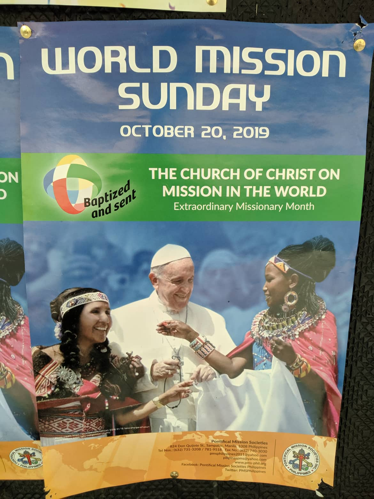

San Ildefonso Parish is a Church of San Ildefonso, San Ildefonso became a saint because he was a good, hardworking and holy bishop. He truly shepherded his flock when he was living here on earth. But to this day he still shepherds us. From heaven he continues to pray for us and guide us. San Ildefonso parish was endured by the grace of God which you have received in the prayer of your patron. As the parish San Ildefonso Parish has served for 52 years. Over the 50 years of the parish, many young people from here have responded to the call of God to be priests, brothers and sisters. They are the fruit of the healthy and steadfast faith of the patrons of San Ildefonso.
Baptized and sent
PONTIFICIAL MISSION SOCIETIES IN THE PHILIPPINES
PISTA NG MISYON
in celebration of the
Extraordinary Mission Month
October 18, 2019 • Friday • 8AM-3PM
CUNETA ASTRODOME, PASAY CITY
(FOR ONLINE REGISTRATION)
Sign in at https://tinyurl.com/PMSEMMRegistration
(FOR MANUAL REGISTRATION)
Contact PONTIFICAL MISSION SOCIETIES
at pmsphilippines2011@yahoo.com
(02) 731-3208 ;
(0921) 349-9720 (Smart); (0995) 593-7814 (Globe)

WORLD MISSION SUNDAY
OCTOBER 20, 2019
Baptized and sent
THE CHURCH OF CHRIST ON
MISSION IN THE WORLD
Extraordinary Mission Month
B24 Don Quijote St.Sampaloc, Manila, 1008 Philippines
Tel Nos:(632) 731-3208/ 781-9518. Fax No: (632) 740-3030
Email: pmsphilippines2011@yahoo.com
pilipinaspms@yahoo.com
Website: www.pms-phil.org
Facebook: Pontificial Mission Societies Philippines
Twitter: PMSPhilippines
| Sunday Masses: | Baptism: |
| Morning: 5AM•6:30AM•8AM•9:30AM•11AM | Sunday 12NN • Seminar 9:30AM |
| Evening: 5PM•6:30PM•8PM | Wedding, Blessing, Anointing Of The Sick & Funeral: |
| Weekday Masses: | Upon Request |
| 6AM•6:30PM | Eucharistic Vigil: |
| Saturday Masses: | 1st Friday 9PM - 5AM |
| 6AM • 6PM | Adoration Chapel: |
| Confession: | Daily 6:30AM-9PM |
| During Masses | Medical & Dental: |
| Mon-Sat 9AM-12NN • 2-4PM | |
| Body Talk: | |
| Tuesday & Saturday: 9AM-12NN |